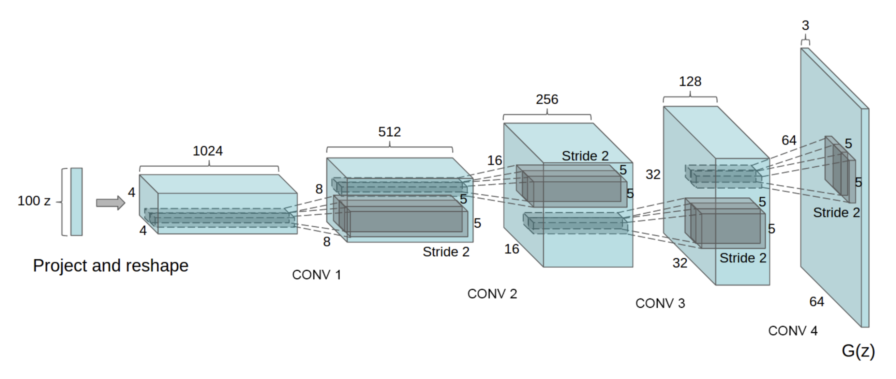

!sudo apt install cm-super dvipng texlive-latex-extra texlive-latex-recommended
!pip install einops
import os
import random
import numpy as np
import torch
import torch.nn as nn
import torch.nn.parallel
import torch.nn.functional as F
import torchvision.utils as vutils
from torch.utils.data import DataLoader
from torchvision import datasets, transforms, models
import matplotlib.pyplot as plt
import matplotlib.animation as animation
from IPython.display import HTML
from einops import rearrange
from latex import latexify
latexify(columns = 2)
%matplotlib inline
%config InlineBackend.figure_format = "retina"
if torch.backends.mps.is_available():
device = torch.device("mps")
elif torch.cuda.is_available():
device = torch.device("cuda")
else:
device = torch.device("cpu")
print(device)
manualSeed = 999
#manualSeed = random.randint(1, 10000)
print("Random Seed: ", manualSeed)
random.seed(manualSeed)
torch.manual_seed(manualSeed)
torch.use_deterministic_algorithms(True)mps
Random Seed: 999batch_size = 128
image_size = 64
nc = 1
nz = 100
ngf = 64
ndf = 64
num_epochs = 5
lr = 2e-4
beta1 = 0.5transform = transforms.Compose([transforms.Resize(image_size), transforms.CenterCrop(image_size), transforms.ToTensor(), transforms.Normalize([0.5 for _ in range(nc)], [0.5 for _ in range(nc)])])mnist_train = datasets.MNIST(root = "../CVDatasets", train = True, transform = transform, download = True)
mnist_test = datasets.MNIST(root = "../CVDatasets", train = False, transform = transform, download = True)
# celebADataset = datasets.ImageFolder(root = "../CVDatasets/CelebA", transform = transform)
# celebALoader = DataLoader(dataset = celebADataset, batch_size = batch_size, shuffle = True)
mnist_train_loader = DataLoader(dataset = mnist_train, batch_size = batch_size, shuffle = True)
mnist_test_loader = DataLoader(dataset = mnist_test, batch_size = batch_size, shuffle = False)\[ \text{Generator}: G_{\phi} \]
\[ \text{Discriminator}: D_{\theta} \]
\[ \min_{\phi} \max_{\theta} V(G, D) = \underset{\textbf{x} \sim p_{\text{data}}}{\mathbb{E}} [\log(D_{\theta}(\textbf{x}))] + \underset{\textbf{z} \sim p_z(\textbf{z})}{\mathbb{E}} [1 - \log(D_{\theta}(G_{\phi}(\textbf{z})))] \]
Given an \(N \times N\) image, \(f \times f\) filter size, \(s\) as stride and \(p\) as the padding, the output dimension is
\[ \left\lfloor{\frac{N + 2p - f}{s}}\right\rfloor + 1 \]

Generator - Discriminator Architecture
class Discriminator(nn.Module):
def __init__(self, channels_img, feature_d):
super().__init__()
self.disc = nn.Sequential(
nn.Conv2d(channels_img, feature_d, kernel_size = 4, stride = 2, padding = 1),
# BatchNorm is skipped for the first layer
nn.LeakyReLU(0.2),
self._block(feature_d, feature_d * 2, 4, 2, 1),
self._block(feature_d * 2, feature_d * 4, 4, 2, 1),
self._block(feature_d * 4, feature_d * 8, 4, 2, 1),
nn.Conv2d(feature_d * 8, 1, kernel_size = 4, stride = 2, padding = 0),
)
def _block(self, in_channels, out_channels, kernel_size, stride, padding):
return nn.Sequential(
nn.Conv2d(in_channels, out_channels, kernel_size, stride, padding, bias = False),
nn.BatchNorm2d(out_channels),
nn.LeakyReLU(0.2),
)
def forward(self, x):
return self.disc(x)
class Generator(nn.Module):
def __init__(self, channels_noise, channels_img, feature_g):
super().__init__()
self.net = nn.Sequential(
self._block(channels_noise, feature_g * 16, 4, 1, 0),
self._block(feature_g * 16, feature_g * 8, 4, 2, 1),
self._block(feature_g * 8, feature_g * 4, 4, 2, 1),
self._block(feature_g * 4, feature_g * 2, 4, 2, 1),
nn.ConvTranspose2d(feature_g * 2, channels_img, kernel_size = 4, stride = 2, padding = 1),
# No BatchNorm here and Tanh is used in the last layer
nn.Tanh(),
# image transformed to be in [-1, 1]
)
def _block(self, in_channels, out_channels, kernel_size, stride, padding):
return nn.Sequential(
nn.ConvTranspose2d(in_channels, out_channels, kernel_size, stride, padding, bias = False),
nn.BatchNorm2d(out_channels),
nn.ReLU(),
)
def forward(self, x):
return self.net(x)
def initialize_weights(model):
for m in model.modules():
if isinstance(m, (nn.Conv2d, nn.ConvTranspose2d, nn.BatchNorm2d)):
nn.init.normal_(m.weight.data, 0.0, 0.02)
# Initialized with mean 0 and std 0.02Model Instantiation
gen = Generator(nz, nc, ngf).to(device)
disc = Discriminator(nc, ndf).to(device)
initialize_weights(gen)
initialize_weights(disc)Optimizers and Criterion
opt_gen = torch.optim.Adam(gen.parameters(), lr = lr, betas = (beta1, 0.999))
opt_disc = torch.optim.Adam(disc.parameters(), lr = lr, betas = (beta1, 0.999))
criterion = nn.BCEWithLogitsLoss()fixed_noise = torch.randn(32, nz, 1, 1).to(device)
gen.train()
disc.train()Discriminator(
(disc): Sequential(
(0): Conv2d(1, 64, kernel_size=(4, 4), stride=(2, 2), padding=(1, 1))
(1): LeakyReLU(negative_slope=0.2)
(2): Sequential(
(0): Conv2d(64, 128, kernel_size=(4, 4), stride=(2, 2), padding=(1, 1), bias=False)
(1): BatchNorm2d(128, eps=1e-05, momentum=0.1, affine=True, track_running_stats=True)
(2): LeakyReLU(negative_slope=0.2)
)
(3): Sequential(
(0): Conv2d(128, 256, kernel_size=(4, 4), stride=(2, 2), padding=(1, 1), bias=False)
(1): BatchNorm2d(256, eps=1e-05, momentum=0.1, affine=True, track_running_stats=True)
(2): LeakyReLU(negative_slope=0.2)
)
(4): Sequential(
(0): Conv2d(256, 512, kernel_size=(4, 4), stride=(2, 2), padding=(1, 1), bias=False)
(1): BatchNorm2d(512, eps=1e-05, momentum=0.1, affine=True, track_running_stats=True)
(2): LeakyReLU(negative_slope=0.2)
)
(5): Conv2d(512, 1, kernel_size=(4, 4), stride=(2, 2))
)
)for epoch in range(num_epochs):
for batch_idx, (real, _) in enumerate(mnist_train_loader):
real = real.to(device)
noise = torch.randn(batch_size, nz, 1, 1).to(device)
fake = gen(noise)
# Train Discriminator: max log(D(x)) + log(1 - D(G(z)))
disc_real = disc(real).reshape(-1)
# BCE(Real, 1) = -log(Real)
loss_disc_real = criterion(disc_real, torch.ones_like(disc_real))
disc_fake = disc(fake.detach()).reshape(-1)
# BCE(Fake, 0) = -log(1 - Fake) = -log(Fake)
loss_disc_fake = criterion(disc_fake, torch.zeros_like(disc_fake))
loss_disc = (loss_disc_real + loss_disc_fake) / 2
disc.zero_grad()
loss_disc.backward(retain_graph = True)
opt_disc.step()
# Train Generator: min log(1 - D(G(z))) <-> max log(D(G(z))
output = disc(fake).reshape(-1)
# BCE(Fake, 1) = -log(Fake)
loss_gen = criterion(output, torch.ones_like(output))
gen.zero_grad()
loss_gen.backward()
opt_gen.step()
if batch_idx % 100 == 0:
print(f"Epoch [{epoch}/{num_epochs}], Batch Step [{batch_idx}/{len(mnist_train_loader)}], Loss D: {loss_disc:.4f}, Loss G: {loss_gen:.4f}")
with torch.no_grad():
# infer from the Generator by plotting the generated images
gen.eval()
fake_noise = torch.randn(32, nz, 1, 1).to(device)
fake = gen(fake_noise)
img_grid_real = vutils.make_grid(real[:32], normalize = True)
img_grid_fake = vutils.make_grid(fake[:32], normalize = True)
plt.figure(figsize = (10, 10))
plt.subplot(1, 2, 1)
plt.axis("off")
plt.title("Real Images")
plt.imshow(np.transpose(img_grid_real.cpu().detach().numpy(), (1, 2, 0)))
plt.subplot(1, 2, 2)
plt.axis("off")
plt.title("Fake Images")
plt.imshow(np.transpose(img_grid_fake.cpu().detach().numpy(), (1, 2, 0)))
plt.show()
img = transforms.ToPILImage()(img_grid_fake)
if not os.path.exists("./DCGAN/MNIST"):
os.makedirs("./DCGAN/MNIST")
img.save(f"./DCGAN/MNIST/{epoch}_{batch_idx}.png")
gen.train()
torch.save(gen.state_dict(), "mnist_gen.pth")
torch.save(disc.state_dict(), "mnist_disc.pth")Epoch [0/5], Batch Step [0/469], Loss D: 0.6396, Loss G: 0.8332
Epoch [0/5], Batch Step [100/469], Loss D: 0.0153, Loss G: 4.0897
Epoch [0/5], Batch Step [200/469], Loss D: 0.6575, Loss G: 1.2781
Epoch [0/5], Batch Step [300/469], Loss D: 0.6146, Loss G: 0.8419
Epoch [0/5], Batch Step [400/469], Loss D: 0.5918, Loss G: 0.9050
Epoch [1/5], Batch Step [0/469], Loss D: 0.5435, Loss G: 1.0118
Epoch [1/5], Batch Step [100/469], Loss D: 0.5846, Loss G: 1.1505
Epoch [1/5], Batch Step [200/469], Loss D: 0.5791, Loss G: 0.8657
Epoch [1/5], Batch Step [300/469], Loss D: 0.6101, Loss G: 0.9389
Epoch [1/5], Batch Step [400/469], Loss D: 0.6121, Loss G: 0.9977
Epoch [2/5], Batch Step [0/469], Loss D: 0.5481, Loss G: 1.8410
Epoch [2/5], Batch Step [100/469], Loss D: 0.5722, Loss G: 0.6610
Epoch [2/5], Batch Step [200/469], Loss D: 0.6020, Loss G: 2.2574
Epoch [2/5], Batch Step [300/469], Loss D: 0.3735, Loss G: 1.5304
Epoch [2/5], Batch Step [400/469], Loss D: 0.5576, Loss G: 0.6515
Epoch [3/5], Batch Step [0/469], Loss D: 0.3645, Loss G: 0.9584
Epoch [3/5], Batch Step [100/469], Loss D: 0.4402, Loss G: 2.8341
Epoch [3/5], Batch Step [200/469], Loss D: 0.7291, Loss G: 0.7157
Epoch [3/5], Batch Step [300/469], Loss D: 0.3787, Loss G: 1.6210
Epoch [3/5], Batch Step [400/469], Loss D: 0.3439, Loss G: 1.8571
Epoch [4/5], Batch Step [0/469], Loss D: 0.3109, Loss G: 1.9058
Epoch [4/5], Batch Step [100/469], Loss D: 0.2812, Loss G: 2.7282
Epoch [4/5], Batch Step [200/469], Loss D: 0.4025, Loss G: 1.6386
Epoch [4/5], Batch Step [300/469], Loss D: 0.4022, Loss G: 2.9081
Epoch [4/5], Batch Step [400/469], Loss D: 0.4217, Loss G: 2.0483/usr/local/lib/python3.10/dist-packages/torch/autograd/graph.py:744: UserWarning: Plan failed with a cudnnException: CUDNN_BACKEND_EXECUTION_PLAN_DESCRIPTOR: cudnnFinalize Descriptor Failed cudnn_status: CUDNN_STATUS_NOT_SUPPORTED (Triggered internally at ../aten/src/ATen/native/cudnn/Conv_v8.cpp:919.)
return Variable._execution_engine.run_backward( # Calls into the C++ engine to run the backward pass
device = torch.device("cuda" if torch.cuda.is_available() else "cpu")
gen = Generator(nz, nc, ngf).to(device)
gen.load_state_dict(torch.load("../CVModels/mnist_gen.pth", map_location = device))
gen.eval()Generator(
(net): Sequential(
(0): Sequential(
(0): ConvTranspose2d(100, 1024, kernel_size=(4, 4), stride=(1, 1), bias=False)
(1): BatchNorm2d(1024, eps=1e-05, momentum=0.1, affine=True, track_running_stats=True)
(2): ReLU()
)
(1): Sequential(
(0): ConvTranspose2d(1024, 512, kernel_size=(4, 4), stride=(2, 2), padding=(1, 1), bias=False)
(1): BatchNorm2d(512, eps=1e-05, momentum=0.1, affine=True, track_running_stats=True)
(2): ReLU()
)
(2): Sequential(
(0): ConvTranspose2d(512, 256, kernel_size=(4, 4), stride=(2, 2), padding=(1, 1), bias=False)
(1): BatchNorm2d(256, eps=1e-05, momentum=0.1, affine=True, track_running_stats=True)
(2): ReLU()
)
(3): Sequential(
(0): ConvTranspose2d(256, 128, kernel_size=(4, 4), stride=(2, 2), padding=(1, 1), bias=False)
(1): BatchNorm2d(128, eps=1e-05, momentum=0.1, affine=True, track_running_stats=True)
(2): ReLU()
)
(4): ConvTranspose2d(128, 1, kernel_size=(4, 4), stride=(2, 2), padding=(1, 1))
(5): Tanh()
)
)noise = torch.randn(32, nz, 1, 1).to(device)
fake = gen(noise)
img_grid_fake = vutils.make_grid(fake[:32], normalize = True)
plt.figure(figsize = (10, 10))
plt.axis("off")
plt.title("Fake Images")
plt.imshow(np.transpose(img_grid_fake.cpu().detach().numpy(), (1, 2, 0)))
plt.show()4 Images in the Latent Space
n = 4
interpolation = torch.randn(n, nz, 1, 1).to(device)
fake = gen(interpolation)
plt.figure(figsize = (10, 8))
plt.subplot(2, 2, 1)
plt.imshow(np.transpose(fake[0].cpu().detach().numpy(), (1, 2, 0)), cmap = "gray")
plt.title("Image 1")
plt.axis("off")
plt.subplot(2, 2, 2)
plt.imshow(np.transpose(fake[1].cpu().detach().numpy(), (1, 2, 0)), cmap = "gray")
plt.title("Image 2")
plt.axis("off")
plt.subplot(2, 2, 3)
plt.imshow(np.transpose(fake[2].cpu().detach().numpy(), (1, 2, 0)), cmap = "gray")
plt.title("Image 3")
plt.axis("off")
plt.subplot(2, 2, 4)
plt.imshow(np.transpose(fake[3].cpu().detach().numpy(), (1, 2, 0)), cmap = "gray")
plt.title("Image 4")
plt.axis("off")Linear Interpolation
\[ \mathbb{w^*} = \lambda \mathbb{a} + (1 - \lambda) \mathbb{b} \]
n = 13
interpolation01 = torch.zeros(n, nz, 1, 1).to(device)
interpolation02 = torch.zeros(n, nz, 1, 1).to(device)
interpolation13 = torch.zeros(n, nz, 1, 1).to(device)
interpolation23 = torch.zeros(n, nz, 1, 1).to(device)
for i in range(n):
interpolation01[i] = (i / (n - 1)) * interpolation[1] + ((n - i - 1) / (n - 1)) * interpolation[0]
interpolation02[i] = (i / (n - 1)) * interpolation[2] + ((n - i - 1) / (n - 1)) * interpolation[0]
interpolation13[i] = (i / (n - 1)) * interpolation[3] + ((n - i - 1) / (n - 1)) * interpolation[1]
interpolation23[i] = (i / (n - 1)) * interpolation[3] + ((n - i - 1) / (n - 1)) * interpolation[2]
topSide = torch.cat([interpolation[0].unsqueeze(0), interpolation01, interpolation[1].unsqueeze(0)], dim = 0)
bottomSide = torch.cat([interpolation[2].unsqueeze(0), interpolation23, interpolation[3].unsqueeze(0)], dim = 0)
leftSide = torch.cat([interpolation[0].unsqueeze(0), interpolation02, interpolation[2].unsqueeze(0)], dim = 0)
rightSide = torch.cat([interpolation[1].unsqueeze(0), interpolation13, interpolation[3].unsqueeze(0)], dim = 0)
plt.figure(figsize = (15 * 3, 3))
for i in range(15):
plt.subplot(1, 15, i + 1)
plt.imshow(np.transpose(gen(bottomSide[i].unsqueeze(0))[0].cpu().detach().numpy(), (1, 2, 0)), cmap = "gray")
plt.axis("off")
plt.show()Interpolation along all the 4 peripheral
place = 1
plt.figure(figsize = (15, 15))
for i in range(15):
for j in range(15):
plt.subplot(15, 15, place)
if (i == 0):
plt.imshow(np.transpose(gen(topSide[j].unsqueeze(0))[0].cpu().detach().numpy(), (1, 2, 0)), cmap = "gray")
if (i == 14):
plt.imshow(np.transpose(gen(bottomSide[j].unsqueeze(0))[0].cpu().detach().numpy(), (1, 2, 0)), cmap = "gray")
if (i != 0 and i != 14):
if (j == 0):
plt.imshow(np.transpose(gen(leftSide[i].unsqueeze(0))[0].cpu().detach().numpy(), (1, 2, 0)), cmap = "gray")
if (j == 14):
plt.imshow(np.transpose(gen(rightSide[i].unsqueeze(0))[0].cpu().detach().numpy(), (1, 2, 0)), cmap = "gray")
plt.axis("off")
place += 1
plt.show()final_interpolation = torch.zeros(15, 15, nz, 1, 1).to(device)
final_interpolation[0] = topSide
final_interpolation[14] = bottomSide
for i in range(1, 14):
for j in range(15):
if (j == 0):
final_interpolation[i][j] = leftSide[i]
if (j == 14):
final_interpolation[i][j] = rightSide[i]
if (j != 0 or j != 14):
final_interpolation[i][j] = (j / (n - 1)) * rightSide[i] + ((n - j - 1) / (n - 1)) * leftSide[i]place = 1
plt.figure(figsize = (15, 15))
for i in range(15):
for j in range(15):
plt.subplot(15, 15, place)
plt.imshow(np.transpose(gen(final_interpolation[i][j].unsqueeze(0))[0].cpu().detach().numpy(), (1, 2, 0)), cmap = "gray")
plt.axis("off")
place += 1
plt.savefig(f"./DCGAN/MNIST_Interpolate/Interpolation_{i}_{j}.png")
plt.show()